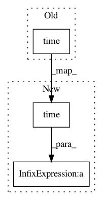

4fde867a550b532a6bbc6ea82db69a0d902862f9,train.py,,,#,22
Before Change
// Determine approximate time left for epoch
epoch_batches_left = len(dataloader) - (batch_i + 1)
time_left = datetime.timedelta(seconds=epoch_batches_left * (time.time() - prev_time))
prev_time = time.time()
print(f"---- ETA {time_left}")
After Change
optimizer = torch.optim.Adam(filter(lambda p: p.requires_grad, model.parameters()))
for epoch in range(opt.epochs):
start_time = time.time()
for batch_i, (_, imgs, targets) in enumerate(dataloader):
batches_done = len(dataloader) * epoch + batch_i
imgs = Variable(imgs.to(device))
targets = Variable(targets.to(device), requires_grad=False)
optimizer.zero_grad()
loss = model(imgs, targets)
loss.backward()
optimizer.step()
// ----------------
// Log progress
// ----------------
print("\n---- [Epoch %d/%d, Batch %d/%d] ----" % (epoch, opt.epochs, batch_i, len(dataloader)))
for i in range(4):
print(
"[%s] [loss %f, x %f, y %f, w %f, h %f, conf %f, cls %f, cls_acc: %.2f%%, recall: %.5f, precision: %.5f]"
% (
"Total" if i + 1 == 4 else "YOLO Layer %d" % (i + 1),
model.losses[i]["loss"],
model.losses[i]["x"],
model.losses[i]["y"],
model.losses[i]["w"],
model.losses[i]["h"],
model.losses[i]["conf"],
model.losses[i]["cls"],
model.losses[i]["cls_acc"],
model.losses[i]["recall"],
model.losses[i]["precision"],
)
)
// Tensorboard logging
for name, loss in model.losses[i].items():
loss_name = f"{name}_total" if i + 1 == 4 else f"{name}_{i+1}"
logger.scalar_summary(loss_name, loss, batches_done)
// Determine approximate time left for epoch
epoch_batches_left = len(dataloader) - (batch_i + 1)
time_left = datetime.timedelta(seconds=epoch_batches_left * (time.time() - start_time) / (batch_i + 1))
print(f"---- ETA {time_left}")
model.seen += imgs.size(0)
In pattern: SUPERPATTERN
Frequency: 4
Non-data size: 3
Instances
Project Name: eriklindernoren/PyTorch-YOLOv3
Commit Name: 4fde867a550b532a6bbc6ea82db69a0d902862f9
Time: 2019-04-22
Author: eriklindernoren@live.se
File Name: train.py
Class Name:
Method Name:
Project Name: alexandrebarachant/muse-lsl
Commit Name: 1398b69de5022a579d45375f8d7fa9addab7c694
Time: 2018-05-21
Author: morrisondano@gmail.com
File Name: muselsl/record.py
Class Name:
Method Name: record_direct
Project Name: andresriancho/w3af
Commit Name: 7978a2a13cbc73841de76f7f641894383af4f4e2
Time: 2018-06-26
Author: andres.riancho@gmail.com
File Name: w3af/core/data/url/handlers/keepalive/connection_manager.py
Class Name: ConnectionManager
Method Name: cleanup_broken_connections
Project Name: rasbt/mlxtend
Commit Name: c2abce56431e874d0968658bffd56d589036445c
Time: 2017-11-04
Author: mathew@mathewsavage.com
File Name: mlxtend/utils/counter.py
Class Name: Counter
Method Name: update